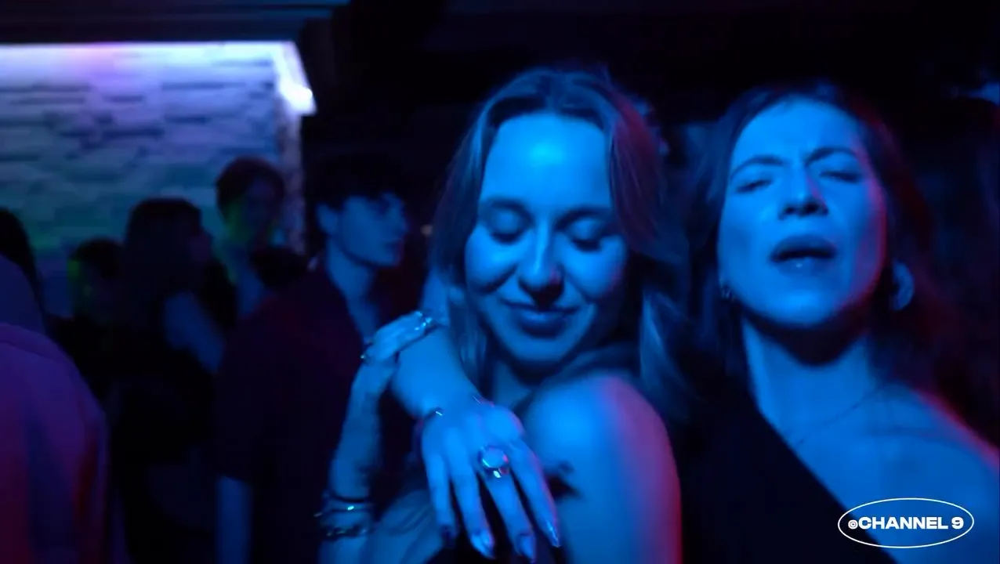
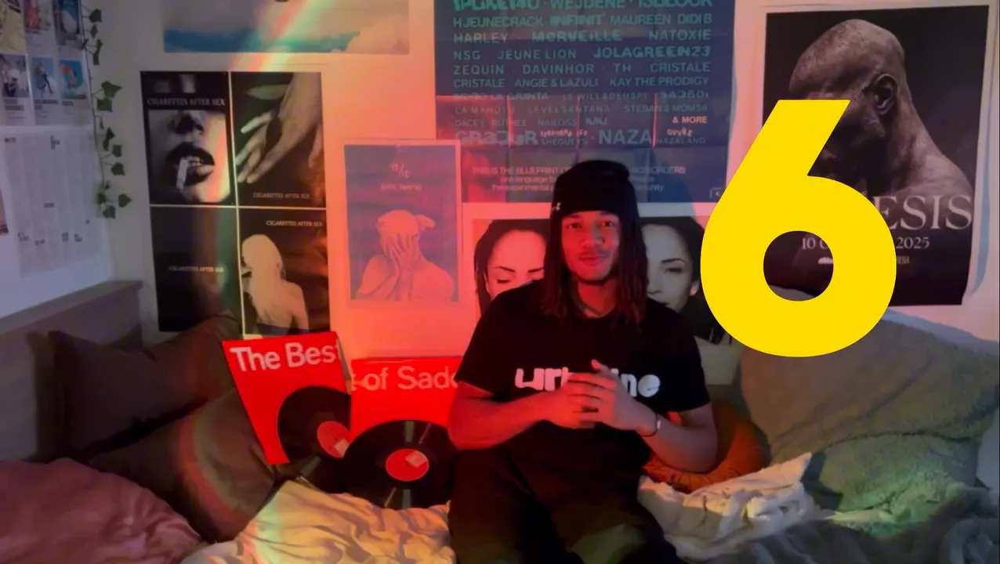
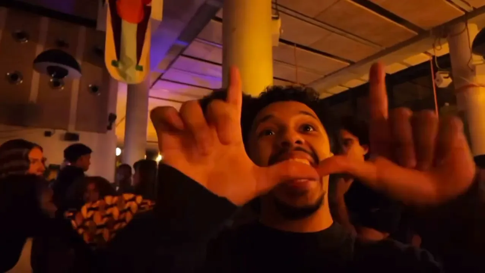
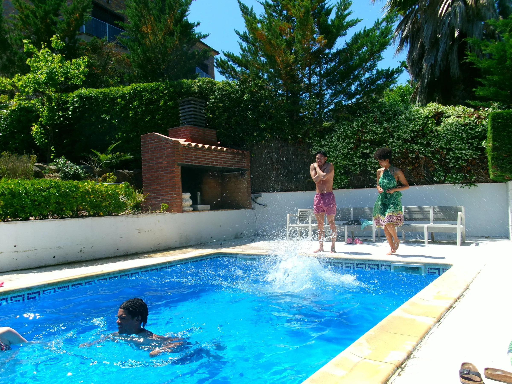
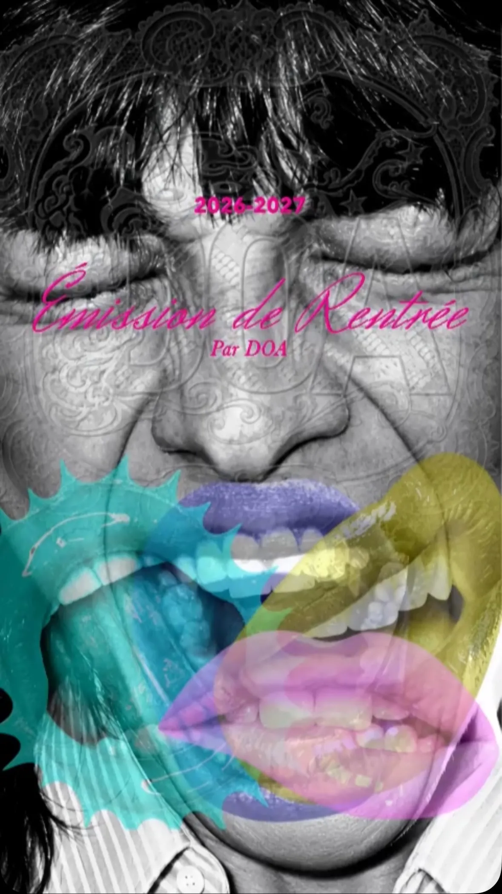

Projets
Les projets de L’Urbaine depuis le campus de Dauphine : la scène du DAU’Clash, les nuits de l’UR’Night, les formats vidéo, les fresques et la vie de l’asso.
-
DAU’Clash Rap battle et éloquence Un micro, deux étudiants face à face et un jury. Le clash de Dauphine, à l’amphi 1.

-
UR’Night Rap, shatta, bouyon et R&B La soirée de L’Urbaine, filmée par Channel 9 Dauphine.

-
URBN’s View Entretiens à la sortie du spectacle Épisode 1 : Le Bourgeois gentilhomme revisité par PAT Studio, à l’Apollo Théâtre.

-
Sade Portrait musical L’élégance d’une voix intemporelle, racontée par Floriane, Andreas et Massily.

-
Rentrée 2026 Trailer et recrutement Le trailer 2026–2027, un mois de soirées et l’appel à la nouvelle génération.

-
WED 2026 Le week-end de l’asso Piscine, criques et terrasses au coucher du soleil, en dix photos.

-
Fenêtre sur Bois Fresque de GraffDeco Une fresque inspirée du Bois de Boulogne, avec L’Urbaine et le Bureau des Arts.

-
Street Art @ Dauphine Concours et fresque de Jibé Un concours avec l’université et une fresque de Jibé dans la cour du campus.

-
DOA × L’Urbaine Émission de rentrée Dauphine On Air reçoit L’Urbaine pour présenter l’asso et ses projets.

- Dau’wards School Format vidéo Un format vidéo de L’Urbaine, à retrouver sur Instagram. Sur Instagram